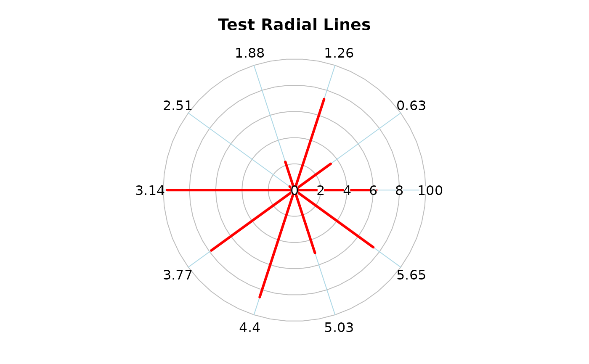
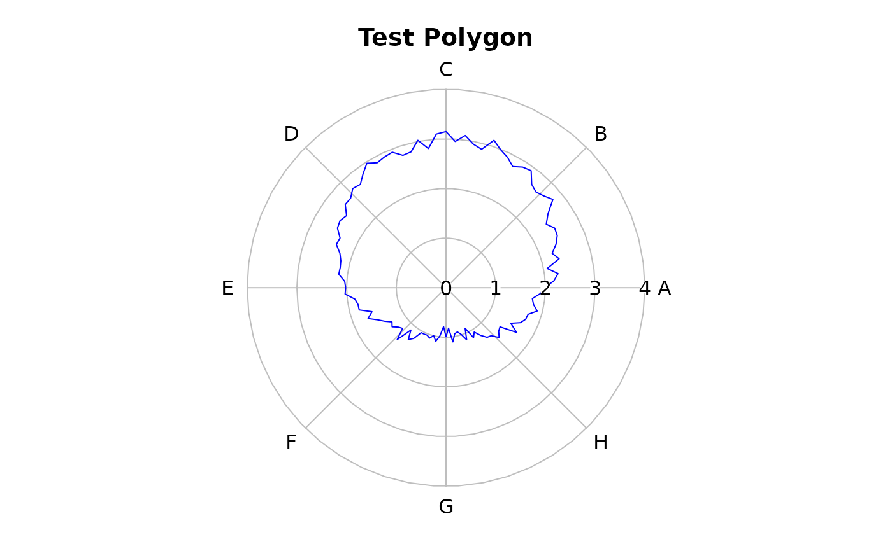
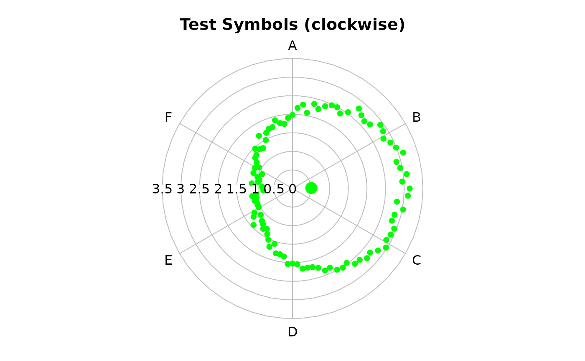
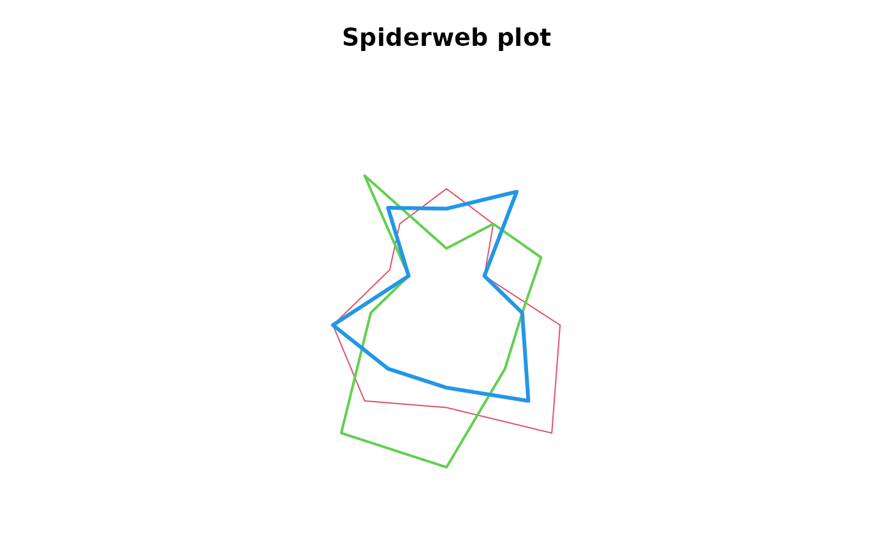
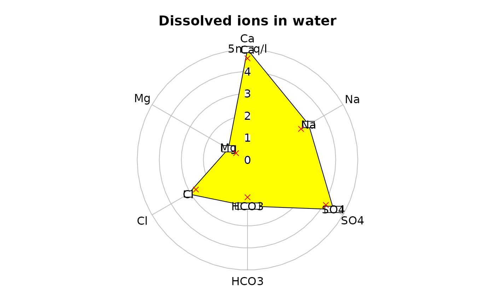
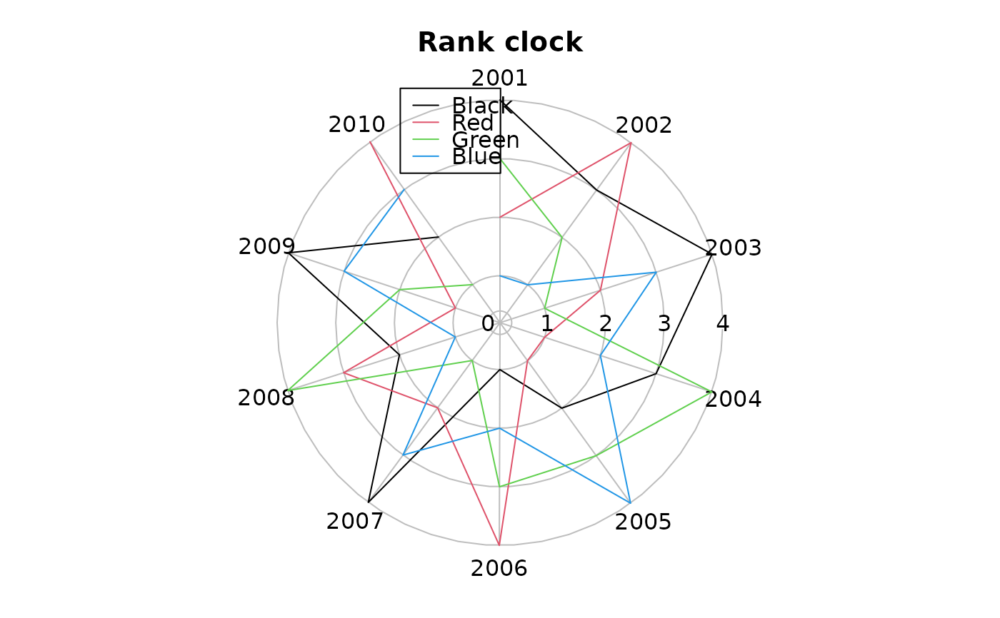

Plot values on a circular grid of 0 to 2*pi radians
radial.plot.RdPlot numeric values as distances from the center of a circular field in the directions defined by angles in radians.
Usage
radial.plot(lengths,radial.pos=NULL,labels=NA,label.pos=NULL,radlab=FALSE,
start=0,clockwise=FALSE,rp.type="r",label.prop=1.1,main="",xlab="",ylab="",
line.col=par("fg"),lty=par("lty"),lwd=par("lwd"),mar=c(2,2,3,2),
show.grid=TRUE,show.grid.labels=4,show.radial.grid=TRUE,rad.col="gray",
grid.col="gray",grid.bg="transparent",grid.left=FALSE,grid.unit=NULL,
point.symbols=1,point.col=par("fg"),show.centroid=FALSE,radial.lim=NULL,
radial.labels=NULL,boxed.radial=TRUE,poly.col=NA,add=FALSE,
loglen=FALSE,explab=FALSE,...)Arguments
- lengths
A numeric data vector or matrix. If lengths is a matrix, the rows will be considered separate data vectors.
- radial.pos
A numeric vector or matrix of positions in radians. These are interpreted as beginning at the right (0 radians) and moving counterclockwise. If radial.pos is a matrix, the rows must correspond to rows of lengths.
- labels
Character strings to be placed at the outer ends of the lines. If set to NULL, will suppress printing of labels, but if missing, the radial positions will be used.
- label.pos
The positions of the labels around the plot in radians.
- radlab
Whether to rotate the outer labels to a radial orientation.
- start
Where to place the starting (zero) point. Defaults to the 3 o'clock position.
- clockwise
Whether to interpret positive positions as clockwise from the starting point. The default is counterclockwise.
- rp.type
Whether to draw (r)adial lines, a (p)olygon, (s)ymbols, (t)ext, or some combination of these. If lengths is a matrix and rp.type is a vector, each row of lengths can be displayed differently.
- label.prop
The label position radius as a proportion of the maximum line length.
- main
The title for the plot.
- xlab,ylab
Normally x and y axis labels are suppressed.
- line.col
The color of the radial lines or polygons drawn.
- lty
The line type(s) to be used for polygons or radial lines.
- lwd
The line width(s) to be used for polygons or radial lines.
- mar
Margins for the plot. Allows the user to leave space for legends, long labels, etc.
- show.grid
Logical - whether to draw a circular grid.
- show.grid.labels
Whether and where to display labels for the grid - see Details.
- show.radial.grid
Whether to draw radial lines to the plot labels.
- rad.col
Color of the radial lines on the grid.
- grid.col
Color of the circumferential lines on the grid.
- grid.bg
Fill color of above.
- grid.left
Whether to place the radial grid labels on the left side.
- grid.unit
Optional unit description for the grid.
- point.symbols
The symbols for plotting (as in pch) or if rp.type is "t", the text that will be displayed.
- point.col
Colors for the symbols.
- show.centroid
Whether to display a centroid.
- radial.lim
The range of the grid circle. Defaults to pretty(range(lengths)), but if more than two values are passed, the exact values will be displayed.
- radial.labels
Optional labels for the radial grid. The default is the values of radial.lim, or if loglen is TRUE, the corresponding log values.
- boxed.radial
Whether to use boxed.labels or text for radial labels.
- poly.col
Fill color if polygons are drawn. Use NA for no fill.
- add
Whether to add one or more series to an existing plot.
- loglen
Whether to log transform the length values. Only base 10 logs are available. Keep in mind that the values actually plotted will be the logarithms, although the exponentiated logs are displayed.
- explab
Whether to use the default fixed (FALSE) or exponential (TRUE) notation for the radial labels.
- ...
Additional arguments are passed to plot.
Value
The par values that are changed in the function as they were at the time radial.plot was called.
Details
radial.plot displays a plot of radial lines, polygon(s), symbols, text or a combination of these centered at the midpoint of the plot frame, the lengths, vertices or positions corresponding to the numeric magnitudes of the data values. Note that if log transformation is requested with loglen, the values plotted will be the logs, not the values displayed on the plot. If show.centroid is TRUE, an enlarged point at the centroid of values is displayed. The centroid is calculated as the average of x and y values unless rp.type="p". In this case, the barycenter of the polygon is calculated. Make sure that these suit your purpose, otherwise calculate the centroid that you really want and add it with the points function. Note that if the observations are not taken at equal intervals around the circle, the centroid may not mean much.
The text option for rp.type allows the user to place text at each point. It is useful for adding labels at arbitrary points on an existing plot or perhaps labelling points with letters or digits rather than different symbols. See the last example.
If the user wants to plot several sets of lines, points or symbols by passing matrices or data frames of lengths and radial.pos, remember that these will be grouped by row, so transpose if the data are grouped by columns.
If more series are added to an existing plot, radial.plot will try to maintain the current plot parameters. Resetting the parameters after doing the initial plot will almost certainly mess up any series that are added. Series that are added will be plotted "on top" of the existing plot, possibly overplotting other things. If the added series have a larger range than the initial series, set radial.lim to account for this in the initial plot, and if radial.lim is specified in the initial plot, remember to repeat it for added series as in the example.
The size of the labels on the outside of the plot can be adjusted by setting par(cex.axis=) and that of the labels inside by setting par(cex.lab=). If radlab is TRUE, the labels will be rotated to a radial alignment. This may help when there are many values and labels. If some labels are still crowded, try running label.pos through the spreadout function. If the show.grid.labels argument is a number from 1 to 4, the labels will be placed along a horizontal or vertical radius. The numbers represent the same positions as in axis, with the default (4) on the right.
The radial.plot family of plots is useful for illustrating cyclic data such as wind direction or speed (but see oz.windrose for both), activity at different times of the day, and so on. While radial.plot actually does the plotting, another function is usually called for specific types of cyclic data.
Note
Thanks to Jeremy Claisse and Antonio Hernandez Matias for the lty and rp.type suggestions respectively
Patrick Baker for the request that led to radlab
Thomas Steiner for the request for the radial.lim and radial.labels modifications
Evan Daugharty for requesting the add argument
James MacCarthy for requesting better radial labels
Steve Ellison for noticing that the return values of the functions had changed
Don Dennerline for requesting the rank clock
Mehdi Nellen for the different colors for the radial and circumferential lines for the grid
Mayeul Kauffmann for noticing the radial label bug when a separate radial.grid was included
Ogbos Okike for requesting a text option for rp.type
Keziah Conroy for requesting the log option
Examples
testlen<-runif(10,0,10)
testpos<-seq(0,18*pi/10,length=10)
testlab<-letters[1:10]
oldpar<-radial.plot(testlen,testpos,main="Test Radial Lines",line.col="red",
lwd=3,rad.col="lightblue")

testlen<-c(sin(seq(0,1.98*pi,length=100))+2+rnorm(100)/10)
testpos<-seq(0,1.98*pi,length=100)
radial.plot(testlen,testpos,rp.type="p",main="Test Polygon",line.col="blue",
labels=LETTERS[1:8],label.pos=seq(0,14*pi/8,length.out=8))

# now do a 12 o'clock start with clockwise positive
radial.plot(testlen,testpos,start=pi/2,clockwise=TRUE,show.grid.labels=2,
rp.type="s",main="Test Symbols (clockwise)",radial.lim=c(0,3.5),
point.symbols=16,point.col="green",show.centroid=TRUE,
labels=LETTERS[1:6],label.pos=seq(0,10*pi/6,length.out=6))

# one without the circular grid and multiple polygons
# see the "diamondplot" function for variation on this
posmat<-matrix(sample(2:9,30,TRUE),nrow=3)
radial.plot(posmat,labels=paste("X",1:10,sep=""),rp.type="p",
main="Spiderweb plot",line.col=2:4,show.grid=FALSE,lwd=1:3,
radial.lim=c(0,10))

# dissolved ions in water
ions<-c(3.2,5,1,3.1,2.1,4.5)
ion.names<-c("Na","Ca","Mg","Cl","HCO3","SO4")
radial.plot(ions,labels=ion.names,rp.type="p",main="Dissolved ions in water",
grid.unit="meq/l",radial.lim=c(0,5),poly.col="yellow",show.grid.labels=3)
# add the names of the ions to the plot
radial.plot(ions,rp.type="t",point.symbols=ion.names,radial.lim=c(0,5),
add=TRUE)
# add points inside the polygon - radial.lim is supplied by plotrix_env
radial.plot(ions-0.4,rp.type="s",point.symbols=4,point.col="red",add=TRUE)

radmat<-matrix(c(sample(1:4,4),sample(1:4,4),sample(1:4,4),sample(1:4,4),
sample(1:4,4),sample(1:4,4),sample(1:4,4),sample(1:4,4),
sample(1:4,4),sample(1:4,4)),nrow=4)
# finally a rank clock
radial.plot(radmat,rp.type="l",radial.pos=seq(0,20*pi/11.1,length.out=10),
label.pos=seq(0,20*pi/11.1,length.out=10),start=pi/2,clockwise=TRUE,
labels=2001:2010,radial.lim=c(0.2,4),main="Rank clock")
legend(-1.7,4,c("Black","Red","Green","Blue"),col=1:4,lty=1)

par(xpd=oldpar$xpd,mar=oldpar$mar,pty=oldpar$pty)
# reset the margins
par(mar=c(5,4,4,2))